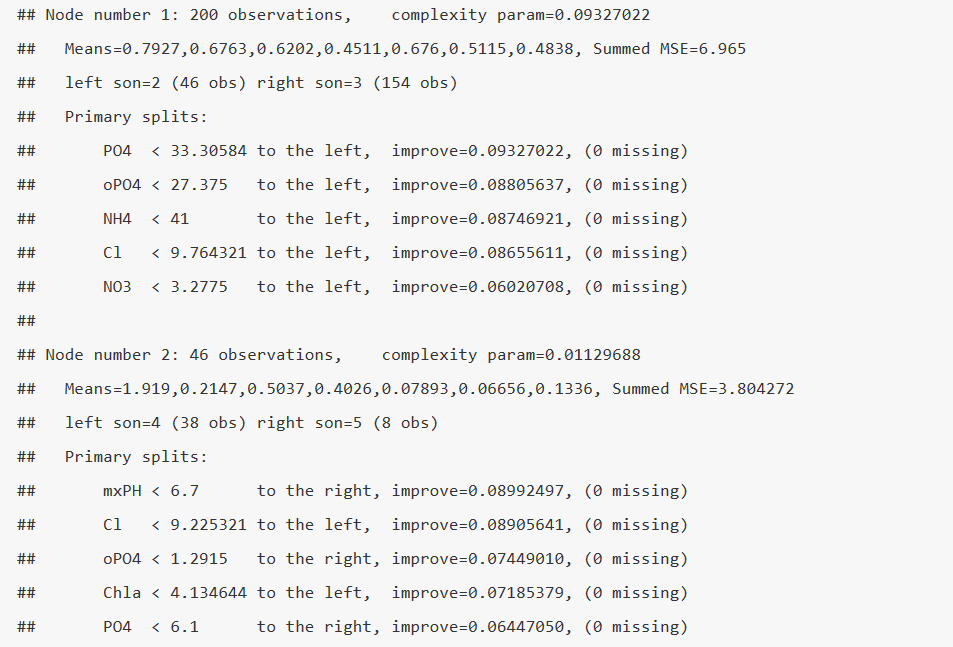

ГЛАВА 4 Построение регрессионных моделей различного типа
4.1 Селекция оптимального набора предикторов линейной модели
Модель множественной линейной регрессии является, безусловно, весьма полезной и широко применяемой для прогнозирования количественного отклика. Считается, что наиболее эффективный путь улучшения качества регрессии - исключение незначимых коэффициентов, или, выражаясь точнее, отбор информативного комплекса \(S_q\) из \(q\) переменных \((q < m)\). Причины, по которым стоит проводить селекцию “оптимального подмножества” предикторов, Дж. Фаравэй (Faraway, 2006) видит в следующем:
- Принцип бритвы Оккама утверждает, что из нескольких вероятных объяснений явления лучшим является самое простое. Компактная модель, из которой удалены избыточные предикторы, лучше объясняет имеющиеся данные.
- Ненужные предикторы добавляют шум к оценке влияния других интересующих нас факторов. Иначе степени свободы (часто ограниченные) будут тратиться впустую.
- При наличии коллинеарности некоторые переменные будут “пытаться сделать одну и ту же работу” (т.е., повторно объяснять вариацию значений зависимой переменной).
- Если модель используется для прогнозирования, то можно сэкономить время и/или деньги, не измеряя избыточные переменные.
Алгоритмы выбора оптимального подмножества \(S_q\) обычно основаны на последовательном “переборном” процессе, при котором многократно создаются модели с различными наборами предикторов, лучшая из которых определяется по некоторому критерию эффективности (ошибка или точность модели, \(R^2\), АIC и проч.). Рассмотрим технику применения и оценим полученные результаты с использованием трех таких методов: пошаговый (forward/backward) метод селекции, рекурсивное исключение и генетический алгоритм, представленные в пакете caret.
В качестве примера рассмотрим построение регрессионных моделей, прогнозирующих обилие водорослей группы a1 в зависимости от гидрохимических показателей воды и условий отбора проб в различных водотоках (см. подробное описание таблицы переменных в разделе 3.4):
library(DMwR)
data(algae)
library(caret)
# Заполним пропуски в данных на основе алгоритма бэггинга
pPbI <- preProcess(algae[, 4:11], method = 'bagImpute')
algae[, 4:11] <- predict(pPbI, algae[, 4:11])
# Сохраним таблицу для использования в дальнейшем
# save(algae, file="algae.RData")Важные предварительные выводы можно сделать, сформировав корреляционную матрицу предикторов (рис. 4.1):
Mcor <- cor(algae[, 4:11])
library(corrplot)
corrplot(Mcor, method = "color", addCoef.col = " darkgreen",
addgrid.col = "gray33", tl.col = "black")
Рисунок 4.1: Корреляционная матрица показателей качества воды в реках
Очевидно, что между предикторами существуют корреляционные связи умеренной силы, а коллинеарность, в целом, выражена слабо.
Полная регрессионная модель и пошаговая процедура
Построим сначала линейную модель на основе полного набора переменных:
lm.a1 <- lm(a1 ~ ., data = algae[, 1:12])
summary(lm.a1)##
## Call:
## lm(formula = a1 ~ ., data = algae[, 1:12])
##
## Residuals:
## Min 1Q Median 3Q Max
## -37.220 -12.053 -2.713 7.235 63.058
##
## Coefficients:
## Estimate Std. Error t value Pr(>|t|)
## (Intercept) 41.1645182 23.9744190 1.717 0.08766 .
## seasonspring 3.5819936 4.1433270 0.865 0.38843
## seasonsummer 0.3287479 3.9991260 0.082 0.93457
## seasonwinter 3.3640471 3.8535616 0.873 0.38382
## sizemedium 3.8121702 3.7576438 1.015 0.31167
## sizesmall 10.1272892 4.1345213 2.449 0.01524 *
## speedlow 3.2789213 4.6957689 0.698 0.48589
## speedmedium -0.3077130 3.2172175 -0.096 0.92391
## mxPH -3.4109832 2.6955778 -1.265 0.20733
## mnO2 1.0622601 0.7048227 1.507 0.13349
## Cl -0.0359835 0.0337474 -1.066 0.28770
## NO3 -1.5464677 0.5514931 -2.804 0.00559 **
## NH4 0.0016512 0.0010047 1.643 0.10200
## oPO4 -0.0004133 0.0395644 -0.010 0.99168
## PO4 -0.0560346 0.0303924 -1.844 0.06683 .
## Chla -0.0580368 0.0783621 -0.741 0.45987
## ---
## Signif. codes: 0 '***' 0.001 '**' 0.01 '*' 0.05 '.' 0.1 ' ' 1
##
## Residual standard error: 17.67 on 184 degrees of freedom
## Multiple R-squared: 0.3669, Adjusted R-squared: 0.3153
## F-statistic: 7.109 on 15 and 184 DF, p-value: 3.661e-12Отметим, что при всей внушительной адекватности модели в целом (по \(F\)-критерию), почти все коэффициенты оцениваются как статистически незначимые. Выполним стандартную пошаговую процедуру включений с исключениями “слабых” предикторов, используя функцию step():
lm_step.a1 <- step(lm.a1, trace = 0)
summary(lm_step.a1)##
## Call:
## lm(formula = a1 ~ size + mxPH + mnO2 + NO3 + NH4 + PO4, data = algae[,
## 1:12])
##
## Residuals:
## Min 1Q Median 3Q Max
## -37.979 -11.705 -3.756 7.748 64.939
##
## Coefficients:
## Estimate Std. Error t value Pr(>|t|)
## (Intercept) 47.0053772 21.3605131 2.201 0.028959 *
## sizemedium 3.5451015 3.3716529 1.051 0.294377
## sizesmall 10.5924078 3.7849285 2.799 0.005656 **
## mxPH -3.7759257 2.4270817 -1.556 0.121415
## mnO2 0.8943326 0.6291757 1.421 0.156812
## NO3 -1.7549081 0.5160452 -3.401 0.000818 ***
## NH4 0.0017853 0.0009545 1.870 0.062939 .
## PO4 -0.0611335 0.0116625 -5.242 4.17e-07 ***
## ---
## Signif. codes: 0 '***' 0.001 '**' 0.01 '*' 0.05 '.' 0.1 ' ' 1
##
## Residual standard error: 17.46 on 192 degrees of freedom
## Multiple R-squared: 0.355, Adjusted R-squared: 0.3315
## F-statistic: 15.09 on 7 and 192 DF, p-value: 1.173e-15Доля значимых предикторов стала существенно выше. Проверим также, можно ли считать статистически значимой некоторое увеличение ошибки модели:
anova(lm.a1, lm_step.a1)## Analysis of Variance Table
##
## Model 1: a1 ~ season + size + speed + mxPH + mnO2 + Cl + NO3 + NH4 + oPO4 +
## PO4 + Chla
## Model 2: a1 ~ size + mxPH + mnO2 + NO3 + NH4 + PO4
## Res.Df RSS Df Sum of Sq F Pr(>F)
## 1 184 57418
## 2 192 58501 -8 -1083.2 0.4339 0.8996Выполним тестирование обоих моделей функцией train() из пакета caret (см. раздел 3.5) с использованием 10-кратной перекрестной проверки:
lm.a1.cv <- train(a1 ~ ., data = algae[, 1:12], method = 'lm',
trControl = trainControl(method = "cv"))
lm_step.a1.cv <- train(a1 ~ size + mxPH + mnO2 + NO3 + NH4 +
PO4, data = algae[, 1:12], method = 'lm',
trControl = trainControl(method = "cv"))Преимущества модели, полученной с использованием пошаговой процедуры отбора предикторов, вполне очевидны.
Рекурсивное исключение переменных
Алгоритм рекурсивного исключения (RFE - Recursive Feature Elimination) выполняется следующим образом. Вначале строится модель по всем предикторам, которые ранжируются по их важности. Далее рассматривается последовательность подмножеств \(\mathbf{S}\) (\(\mathbf{S_1} > \mathbf{S_2}\), и т.д.) из переменных наивысшего ранга. На каждой итерации подмножества Si ранги предикторов пересматриваются, а модели пересчитываются. Итоговая модель основывается на подмножестве \(\mathbf{S_i}\), обеспечивающем оптимум заданному критерию качества.
Функция rfe() из пакета caret включает алгоритм RFE в процедуру ресэмплинга, и тогда цикл рекурсивного исключения приобретает следующий вид:

Синтаксис параметров функций rfe() и rfeControl() в целом похож на таковой у функций train() и trainControl() (см. раздел 3.5). Отметим, что функция rfe() не осуществляет оптимизацию модели, включающей номинальные предикторы, поэтому их необходимо преобразовать в индикаторные переменные с использованием функции model.matrix(). После этого в новой таблице х вместо каждого из факторов образуется несколько бинарных (0/1) столбцов с наименованиями, соответствующими уровням этого фактора (рис. 4.2):4
x <- model.matrix(a1 ~ ., data = algae[, 1:12])[, -1]
set.seed(10)
ctrl <- rfeControl(functions = lmFuncs, method = "cv",
verbose = FALSE, returnResamp = "final")
lmProfileF <- rfe(as.data.frame(x), algae$a1,
sizes = 1:10, rfeControl = ctrl)
predictors(lmProfileF)## [1] "NO3" "sizesmall" "PO4" "NH4" "mnO2" "mxPH"
## [7] "Cl"summary(lmProfileF$fit)##
## Call:
## lm(formula = y ~ ., data = tmp)
##
## Residuals:
## Min 1Q Median 3Q Max
## -34.954 -12.092 -2.939 7.854 64.202
##
## Coefficients:
## Estimate Std. Error t value Pr(>|t|)
## (Intercept) 53.0360409 20.5736460 2.578 0.01069 *
## NO3 -1.5204453 0.5321300 -2.857 0.00474 **
## sizesmall 7.7915975 2.9994896 2.598 0.01011 *
## PO4 -0.0550258 0.0123084 -4.471 1.33e-05 ***
## NH4 0.0014826 0.0009745 1.521 0.12980
## mnO2 0.7937364 0.6357007 1.249 0.21333
## mxPH -4.0948432 2.3838733 -1.718 0.08746 .
## Cl -0.0358915 0.0324345 -1.107 0.26986
## ---
## Signif. codes: 0 '***' 0.001 '**' 0.01 '*' 0.05 '.' 0.1 ' ' 1
##
## Residual standard error: 17.45 on 192 degrees of freedom
## Multiple R-squared: 0.3554, Adjusted R-squared: 0.3319
## F-statistic: 15.12 on 7 and 192 DF, p-value: 1.109e-15require(gridExtra)
grid.arrange(ggplot(lmProfileF, metric = "RMSE"),
ggplot(lmProfileF, metric = "Rsquared"), ncol = 2)
Рисунок 4.2: Изменение корня из среднеквадратичной ошибки и коэффициента детерминации в зависимости от числа предикторов (по результатам перекрестной проверки)
Нельзя утверждать, что нам удалось достигнуть серьезных успехов, применив метод RFE: пошаговая модель lm_step.a1 была компактнее и чуть лучше (по результатам перекрестной проверки), хотя и уступала модели RFE по величине ошибки на обучающей выборке.
Генетический алгоритм
Генетический алгоритм, позаимствованный у природных аналогов и разработанный Дж. Холландом (Holland, 1975), отличается от большинства иных процедур селекции тем, что поиск оптимального решения развивается не сам по себе, а с учетом предыдущего опыта. Смысл его заключается в следующем:
- формируемое решение кодируется как вектор \(x^0\), который называется хромосомой и соответствует битовой маске, т.е. двоичному представлению набора исходных переменных;
- инициализируется исходная “популяция” \(\Pi^0 (x_1^0, \dots, x_{\lambda})\) потенциальных решений, состоящая из некоторого количества хромосом \(\lambda\);
- каждой хромосоме в популяции присваиваются две оценки: значение эффективности \(\mu(x_i^0)\) в соответствии с заданной функцией оптимальности и вероятность воспроизведения \(P(x_i^0)\), которая зависит от “перспективности” этой хромосомы;
- в соответствии с вероятностями воспроизведения хромосомы производят потомков, используя операции кроссинговера (обмена фрагментами между хромосомами) и мутации (замена значения бита 0/1 на противоположный) - см. рис. 4.3;
- в ходе репродуцирования создается новая популяция хромосом, причем с большей вероятностью воспроизводятся наиболее перспективные фрагменты “генетического кода”;
- формирование новой популяции многократно повторяется и осуществляется поиск субоптимальных моделей;
- процесс останавливается, если получено удовлетворительное решение, либо исчерпано все отведенное на эволюцию время.
Рисунок 4.3: Схема кроссинговера и мутации во время применения генетического алгоритма
Синтаксис пары функций gafs() и gafsControl(), реализующих генетический алгоритм в пакете caret, в целом аналогичен таковому у функций rfe() и rfeControl(), но требует задания дополнительных аргументов, регулирующих скорость эволюции. Похоже, что здесь преобразовывать факторы в индикаторные переменные не требуется (эта проблема нами не исследовалась):
# Выполнение этого кода потребует более 30 мин.
# Результаты вычислений здесь не приводятся
set.seed(10)
ctrl <- gafsControl(functions = rfGA, method = "cv",
verbose = FALSE, returnResamp = "final")
lmProfGafs <- gafs(algae[, 1:11], algae$a1,
iters = 10, # 10 генераций
gafsControl = ctrl)
lmProfGafslm_gafs.a1 <- lm(a1 ~ size + mxPH + Cl + NO3 + PO4,
data = algae[, 1:12])
train(a1 ~ size + mxPH + Cl + NO3 + PO4,
data = algae[, 1:12], method = 'lm',
trControl = trainControl(method = "cv"))## Linear Regression
##
## 200 samples
## 5 predictor
##
## No pre-processing
## Resampling: Cross-Validated (10 fold)
## Summary of sample sizes: 180, 179, 180, 180, 180, 180, ...
## Resampling results:
##
## RMSE Rsquared
## 17.73948 0.3412509
##
## Tuning parameter 'intercept' was held constant at a value of TRUE
## Несмотря на большие затраты вычислительных ресурсов (поиск решения продолжался более 30 мин.), была получена комбинация предикторов, превосходящая по критериям RMSE и Rsquared все три предыдущие модели.
Тестирование моделей с использованием дополнительного набора данных
Возникает естественный вопрос: а какой из четырех полученных моделей следует все же отдать предпочтение при прогнозировании? Хорошую возможность ответить на него предоставляет нам Л. Торго (Torgo, 2011), подготовивший на сайте своей книги (http://www.dcc.fc.up.pt) специально предназначенный для этого набор данных из 140 наблюдений (см. файл Eval.txt с предикторами и Sols.txt со значениями отклика). Пропущенные значения заполним с использованием алгоритма бэггинга:
Eval <- read.table('Eval.txt', header = FALSE, dec = '.',
col.names = c('season', 'size', 'speed', 'mxPH', 'mnO2', 'Cl',
'NO3','NH4','oPO4','PO4','Chla'),
na.strings = c('XXXXXXX'))
Sols <- read.table('Sols.txt', header = FALSE, dec = '.',
col.names = c('a1', 'a2', 'a3', 'a4', 'a5', 'a6', 'a7'),
na.strings = c('XXXXXXX'))ImpEval <- preProcess(Eval[, 4:11], method = 'bagImpute')
Eval[, 4:11] <- predict(ImpEval, Eval[, 4:11])# Cохраним данные для дальнейшего использования
save(Eval, Sols, file = "algae_test.RData")y <- Sols$a1
EvalF <- as.data.frame(model.matrix(y ~ ., Eval)[, -1])Выполним прогноз для набора предикторов тестовой выборки и оценим точность каждой модели по трем показателям: среднему абсолютному отклонению (MAE), корню из среднеквадратичного отклонения (RSME) и квадрату коэффициента детерминации Rsq = 1 - NSME, где NSME - относительная ошибка, равная отношению средних квадратов отклонений от регрессии и от общего среднего:
# Функция, выводящая вектор критериев
ModCrit <- function(pred, fact) {
mae <- mean(abs(pred - fact))
rmse <- sqrt(mean((pred - fact)^2))
Rsq <- 1 - sum((fact - pred)^2)/sum((mean(fact) - fact)^2)
c(MAE = mae, RSME = rmse, Rsq = Rsq )
}
y <- Sols$a1
EvalF <- as.data.frame(model.matrix(y ~ ., Eval)[, -1])
Result <- rbind(
lm_full = ModCrit(predict(lm.a1,Eval), Sols[, 1]),
lm_step = ModCrit(predict(lm_step.a1, Eval), Sols[, 1]),
lm_rfe = ModCrit(predict(lmProfileF$fit, EvalF), Sols[, 1]),
lm_gafs = ModCrit(predict(lm_gafs.a1, Eval), Sols[, 1]))
Result## MAE RSME Rsq
## lm_full 12.63768 16.80600 0.3270830
## lm_step 12.46865 16.62469 0.3415243
## lm_rfe 12.30578 16.47235 0.3535371
## lm_gafs 12.72219 17.19335 0.2957067Вероятно, нет смысла делать серьезные выводы из того, что рейтинг лучших моделей при перекрестной проверке и при независимом тестировании на объектах, не участвовавших в построении моделей, оказался столь несовпадающим. Во-первых, разброс критериев точности моделей находится в пределах доверительных интервалов, поэтому их ранжирование, строго говоря, можно трактовать как обусловленное случайными причинами. Во-вторых, многое зависит от того, например, насколько неоднородны были между собой обе выборки. И, наконец, напомним, что одним из основных принципов моделирования сложных систем является принцип множественности моделей, сформулированный В. В. Налимовым и заключающийся в возможности представления одной и той же системы множеством различных моделей в зависимости от целей исследования.
4.2 Регуляризация, частные наименьшие квадраты и kNN-регрессия
Регрессия по методу “лассо”
Регрессия по методу наименьших квадратов (МНК) часто может стать неустойчивой, то есть сильно зависящей от обучающих данных, что обычно является проявлением тенденции к переобучению. Избежать такого переобучения помогает регуляризация - общий метод, заключающийся в наложении дополнительных ограничений на искомые параметры, которые могут предотвратить излишнюю сложность модели. Смысл процедуры заключается в “стягивании” в ходе настройки вектора коэффициентов \(\boldsymbol{\beta}\) таким образом, чтобы они в среднем оказались несколько меньше по абсолютной величине, чем это было бы при оптимизации по МНК.
Метод регрессии “лассо” (LASSO, Least Absolute Shrinkage and Selection Operator) заключается во введении дополнительного слагаемого регуляризации в функционал оптимизации модели, что часто позволяет получать более устойчивое решение. Условие минимизации квадратов ошибки при оценке параметров \(\hat{\beta}\) выражается следующей формулой: \[\hat{\beta} = \arg \min \left(\sum_{i=1}^n (y_i - \sum_{j=1}^m \beta_j x_{ij})^2 + \lambda |\boldsymbol{\beta}|\right),\]
где \(\lambda\) - параметр регуляризации, имеющий смысл штрафа за сложность.
При этом достигается некоторый компромисс между ошибкой регрессии и размерностью используемого признакового пространства, выраженного суммой абсолютных значений коэффициентов \(|\boldsymbol{\beta}|\). В ходе минимизации некоторые коэффициенты становятся равными нулю, что, собственно, и определяет отбор информативных признаков.
При значении параметра регуляризации \(\lambda = 0\), лассо-регрессия сводится к обычному методу наименьших квадратов, а при увеличении \(\lambda\) формируемая модель становится все более “лаконичной”, пока не превратится в нуль-модель. Оптимальная величина \(\lambda\) находится с использованием перекрестной проверки, т.е. ей соответствует минимальная ошибка прогноза \(\hat{y}_i\) на наблюдениях, не участвовавших в построении самой модели.
Обобщением регрессии с регуляризацией можно считать модель “эластичных сетей” (elastic net - Zou, Hastie, 2005). Эта модель устанавливает сразу два типа штрафных параметров - \(\lambda_1\) и \(\lambda_2\), объединяет гребневую регрессию (при \(\lambda_2 = 0\)) и регрессию “лассо” (при \(\lambda_1 = 0\)): \[ \hat{\beta} = \arg \min \left(\sum_{i=1}^n (y_i - \sum_{j=1}^m \beta_j x_{ij})^2 + \lambda_1 (\boldsymbol{\beta})^2 + \lambda_2 |\boldsymbol{\beta}|\right) \]
Продолжим рассмотрение примеров построения регрессионных моделей, прогнозирующих обилие водорослей группы a1 в зависимости от гидрохимических показателей воды и условий отбора проб в различных водотоках (см. подробное описание таблицы переменных в разделе 3.4):
Поскольку даже ориентировочная величина параметра регуляризации нам неизвестна, то на первом этапе с использованием функции glmnet() из одноименного пакета проведем анализ изменения значений коэффициентов в зависимости от \(\lambda\) в ее широком диапазоне от 0.1 до 1000 (рис. 4.4):
load(file = "algae.RData") # Загрузка таблицы algae - раздел 4.1grid = 10^seq(10, -2, length = 100)
library( glmnet)
lasso.a1 <- glmnet(x,algae$a1, alpha = 1, lambda = grid)
plot(lasso.a1, xvar = "lambda", label = TRUE, lwd = 2)
Рисунок 4.4: Зависимость коэффициентов регрессионной модели от значения параметра регуляризации
Функция train() для метода glmnet выполняет оптимизацию для двух моделей регуляризации: при alpha = 1 подгоняется модель по методу лассо, а при alpha = 0 - гребневая регрессия. Примем лассо-модель, и выполним тонкую настройку значения lambda в интервале от 0.5 до 4.5:
x <- model.matrix(a1 ~ ., data = algae[, 1:12])[, -1]
grid.train = seq(0.5, 4.5, length = 15)
lasso.a1.train <- train(as.data.frame(x), algae$a1,
method = 'glmnet',
tuneGrid = expand.grid(.lambda = grid.train, .alpha = 1),
trControl = trainControl(method = "cv"))Выведем протокол со значениями коэффициентов модели:
coef(lasso.a1.train$finalModel, lasso.a1.train$bestTune$lambda)## 16 x 1 sparse Matrix of class "dgCMatrix"
## 1
## (Intercept) 33.98563202
## seasonspring .
## seasonsummer .
## seasonwinter .
## sizemedium .
## sizesmall 7.09517628
## speedlow .
## speedmedium .
## mxPH -1.21026917
## mnO2 .
## Cl -0.03569147
## NO3 -0.37180129
## NH4 .
## oPO4 .
## PO4 -0.05104027
## Chla -0.01040261Коэффициенты регрессии, отличные от 0, составляют информативный набор предикторов.
Метод частных наименьших квадратов (PLS)
В разделе 3.3 мы показали, как c помощью функции preProcess() можно на основе исходных переменных сформировать новое пространство главных компонент и построить модель классификации, прогнозирующую уровень доверия банка к клиенту. Напомним основные шаги построения модели регрессии на главные компоненты (PCR):
- стандартизация матрицы исходных предикторов \(\mathbf{X}\) и отклика \(\mathbf{Y}\);
- выбор числа собственных значений \(p\) и формирование матрицы главных компонент (часто называемой таблицей счетов - scores): \(\mathbf{T}_{n \times r} = \mathbf{X}_{n \times m} \mathbf{P}^T_{m \times p}\), где \(\mathbf{P}\) - матрица нагрузок (loadings);
- оценка вектора коэффициентов \(\mathbf{A}\) множественной регрессии на главные компоненты: \(\mathbf{Y = TA}\), \(\mathbf{A_r = (T^TT)^{-1}T^TY}\);
- пересчет коэффициентов регрессии на главные компоненты обратно в коэффициенты регрессии для исходных предикторов: \(\mathbf{B_m = PA}\).
Однако такой двухступенчатый подход (сжатие информативного пространства и последующая регрессия) - не самый обоснованный способ построения предсказательных моделей, поскольку PCA-преобразование данных далеко не всегда приводит к новым предикторам, наилучшим образом объясняющим отклик.
Метод частных наименьших квадратов PLS (Partial Least Squares, или Projection into Latent Structure) также использует разложение исходных предикторов по осям главных компонент, но дополнительно выделяет подмножество латентных переменных, в пространстве которых связь между зависимой переменной и предикторами достигает максимального значения.
В случае одномерного отклика сначала оценивается корреляционная связь между предикторами \(\mathbf{X}\) и \(\mathbf{Y}\), осуществляется сингулярное разложение матрицы \(\mathbfX^TY}\), и формируется вектор \(\mathbf{W}\) первого направления PLS (direction), при вычислении которого особое внимание уделяется переменным, которые наиболее тесно связаны с откликом. Исходные переменные \(\mathbf{X}\) ортогонально проецируются на ось, задаваемую вектором \(\mathbf{W}\), а затем последовательно рассчитываются значения \(\mathbf{T}\) счетов и нагрузок \(\mathbf{P}\).
Для нахождения второго направления PLS вычисляются остатки, которые остались необъясненными первым PLS-направлением. Оценивается направление новой оси наибольшей корреляции и оцениваются значения счетов с использованием ортогонализированных остатков. Такой итеративный подход можно применить p раз пока модель не достигнет оптимальной сложности.
Реализация PLS-регрессии в среде R представлена в пакете pls, который включает в себя большое количество функций для построения регрессионных моделей, создания диагностических графиков и извлечения информации из результатов вычислений:
library(pls)
M.pls <- plsr(algae$a1 ~ x, scale = TRUE,
validation = "CV", method = "oscorespls")
summary(M.pls)## Data: X dimension: 200 15
## Y dimension: 200 1
## Fit method: oscorespls
## Number of components considered: 15
##
## VALIDATION: RMSEP
## Cross-validated using 10 random segments.
## (Intercept) 1 comps 2 comps 3 comps 4 comps 5 comps 6 comps
## CV 21.4 18.12 18.60 19.03 18.96 19.02 18.99
## adjCV 21.4 18.08 18.51 18.89 18.83 18.89 18.86
## 7 comps 8 comps 9 comps 10 comps 11 comps 12 comps 13 comps
## CV 18.98 18.98 18.97 18.98 18.97 18.98 18.97
## adjCV 18.85 18.85 18.84 18.85 18.84 18.85 18.84
## 14 comps 15 comps
## CV 18.98 18.98
## adjCV 18.84 18.84
##
## TRAINING: % variance explained
## 1 comps 2 comps 3 comps 4 comps 5 comps 6 comps 7 comps
## X 22.09 30.37 36.13 43.14 50.32 59.12 65.95
## algae$a1 33.13 34.73 35.95 36.44 36.55 36.59 36.62
## 8 comps 9 comps 10 comps 11 comps 12 comps 13 comps
## X 71.79 76.83 81.05 87.36 90.82 94.63
## algae$a1 36.66 36.68 36.69 36.69 36.69 36.69
## 14 comps 15 comps
## X 98.30 100.00
## algae$a1 36.69 36.69Рисунок 4.5: Зависимость ошибки перекрестной проверки от числа направлений PLS
Оптимальная модель основывается только на 1-м направлении PLS, поскольку при включении новых осей проецирования ошибка перекрестной проверки монотонно возрастает – см. рис. 4.5. Заметим, что накопленная доля объясненной дисперсии для матрицы предикторов X равномерно возрастает при увеличении числа компонент, тогда как почти вся вариация отклика algae$a1 сконцентрирована вдоль главного направления. Выполним подбор размерности пространства латентных переменных с использованием функции train(). По умолчанию диапазон значений оптимизируемого параметра ncomp принимает значения от 1 до tuneLength:
set.seed(100)
ctrl <- trainControl(method = "cv", number = 10)
(plsTune.a1 <- train(x, algae$a1, method = "pls",
tuneLength = 14, trControl = ctrl,
preProc = c("center", "scale")))## Partial Least Squares
##
## 200 samples
## 15 predictor
##
## Pre-processing: centered (15), scaled (15)
## Resampling: Cross-Validated (10 fold)
## Summary of sample sizes: 180, 180, 181, 180, 180, 180, ...
## Resampling results across tuning parameters:
##
## ncomp RMSE Rsquared
## 1 17.67237 0.3436298
## 2 18.20018 0.3051248
## 3 18.53110 0.2970790
## 4 18.56459 0.2992946
## 5 18.61296 0.3067686
## 6 18.60634 0.3089458
## 7 18.56457 0.3095421
## 8 18.54375 0.3084002
## 9 18.58124 0.3049051
## 10 18.57781 0.3047550
## 11 18.58072 0.3049955
## 12 18.58487 0.3047230
## 13 18.58665 0.3045593
## 14 18.58656 0.3045761
##
## RMSE was used to select the optimal model using the smallest value.
## The final value used for the model was ncomp = 1.Выполним для сравнения подбор числа компонент для модели регрессии на главные компоненты PCR:
set.seed(100)
ctrl <- trainControl(method = "cv", number = 10)
(pcrTune.a1 <- train(x, algae$a1, method = "pcr",
tuneLength = 14, trControl = ctrl,
preProc = c("center", "scale")))## Principal Component Analysis
##
## 200 samples
## 15 predictor
##
## Pre-processing: centered (15), scaled (15)
## Resampling: Cross-Validated (10 fold)
## Summary of sample sizes: 180, 180, 181, 180, 180, 180, ...
## Resampling results across tuning parameters:
##
## ncomp RMSE Rsquared
## 1 17.57910 0.3506163
## 2 17.58672 0.3478174
## 3 17.71246 0.3451498
## 4 17.72601 0.3438194
## 5 17.75847 0.3409392
## 6 17.79829 0.3360691
## 7 17.75683 0.3323780
## 8 17.75579 0.3314832
## 9 17.89951 0.3199569
## 10 17.91759 0.3147450
## 11 17.94640 0.3120058
## 12 18.42424 0.2948562
## 13 18.51396 0.2940086
## 14 18.51505 0.3139059
##
## RMSE was used to select the optimal model using the smallest value.
## The final value used for the model was ncomp = 1.Никаких преимуществ метода PLS по сравнению с PCR на нашем примере обнаружено не было; более того, в целом ошибка модели на главные компоненты оказалась несколько ниже.
Регрессия по методу k ближайших соседей
Ключевая идея, лежащая в основе метода \(k\) ближайших соседей, как уже обсуждалось в разделе 3.4, состоит в формулировке модели в терминах евклидовых расстояний в исходном многомерном пространстве признаков. Задача заключается в том, чтобы для каждой тестируемой точки \(\boldsymbol{x}_0\) найти такую \(\delta\)-окрестность (многомерный эллипсоид), чтобы в ней поместилось \(k\) точек с известными значениями \(y\). Тогда прогноз \(f(\boldsymbol{x}_0)\) можно получить, усредняя значения отклика всех обучающих наблюдений из \(\delta\).
Функция train() оптимизирует число соседей \(k\), используя другую функцию - knnreg() из пакета caret (рис. 4.6):5
knnTune.a1 <- train(x, algae$a1, method = "knn",
preProc = c("center", "scale"),
trControl = ctrl, tuneGrid = data.frame(.k = 4:25))
plot( knnTune.a1)
Рисунок 4.6: Зависимость ошибки перекрестной проверки от числа ближайших соседей
Тестирование моделей с использованием дополнительного набора данных
Используем для прогноза набор данных (Torgo, 2011) из 140 наблюдений, который мы уже применяли в предыдущем разделе. Данные, подготовленные для тестирования с восстановленными пропущенными значениями - таблицы Eval с предикторами и Sols со значениями отклика – мы сохранили в файле algae_test.RData (см раздел [4.1]).
Выполним прогноз для набора предикторов проверочной выборки и оценим точность каждой модели по трем показателям: среднему абсолютному отклонению (MAE), корню из среднеквадратичного отклонения (RSME) и квадрату коэффициента детерминации Rsq = 1 - NSME, где NSME - относительная ошибка, равная отношению среднего квадрата отклонений от модельных значений и от общего среднего:
load(file="algae_test.RData") # Загрузка таблиц Eval, Solsy <- Sols$a1
EvalF <- as.data.frame(model.matrix(y ~ .,Eval)[,-1])
# Функция, выводящая вектор критериев
ModCrit <- function(pred, fact) {
mae <- mean(abs(pred - fact))
rmse <- sqrt(mean((pred - fact)^2))
Rsq <- 1 - sum((fact - pred)^2)/sum((mean(fact) - fact)^2)
c(MAE = mae, RSME = rmse, Rsq = Rsq ) }
Result <- rbind(
lasso = ModCrit(predict(lasso.a1.train, EvalF), Sols[, 1]),
pls_1c = ModCrit(predict(plsTune.a1, EvalF), Sols[, 1]),
pcr_1c = ModCrit(predict(pcrTune.a1, EvalF), Sols[, 1]),
kNN_21 = ModCrit(predict(knnTune.a1, EvalF), Sols[, 1]))
Result## MAE RSME Rsq
## lasso 12.87987 17.30891 0.2862073
## pls_1c 12.76861 17.28422 0.2882423
## pcr_1c 12.85662 17.30063 0.2868898
## kNN_21 12.19520 16.67196 0.3377744Отметим, что регрессия на главные компоненты и PLS в условиях слабой мультиколлинеарности данных не приносит никаких ощутимых преимуществ по сравнению с классическими линейными моделями раздела 4.1. Модель по методу лассо, отлично зарекомендовавшая себя при перекрестной проверке, сработала хуже на свежих данных, что связано, видимо, с дрейфом параметра регуляризации \(\lambda\) от своего оптимального значения. И, наконец, пока лучшей из всех исследованных оказалась методически простейшая модель регрессии по 21 ближайшему соседу. В то же время эта непараметрическая модель имеет важнейший недостаток - она не предоставляет никакой информации для графической или содержательной интерпретации.
4.3 Построение деревьев регрессии
Деревья решений (Breiman at al., 1984; Quinlan, 1986) осуществляют разбиение пространства объектов в соответствии с некоторым набором правил разбиения (splitting rule). Эти правила являются логическими утверждениями в отношении той или иной переменной и могут быть истинными или ложными. Ключевыми здесь являются три обстоятельства: а) правила являются позволяют реализовать последовательную дихотомическую сегментацию данных, б) два объекта считаются похожими, если они оказываются в одном и том же сегменте разбиения, в) на каждом шаге разбиения увеличивается количество информации относительно исследуемой переменной (отклика).
Деревья классификации и регрессии являются одним из наиболее популярных методов решения многих практических задач, что обусловлено следующими причинами:
- Деревья решений позволяют получать очень легко интерпретируемые модели, представляющие собой набор правил вида “если…, то…”. Интерпретация облегчается, в том числе, за счет возможности представить эти правила в виде наглядной древовидной структуры.
- В силу своего устройства деревья решений позволяют работать с переменными любого типа без необходимости какой-либо предварительной подготовки этих переменных для ввода в модель (например, логарифмирование, преобразование категориальных переменных в индикаторные, и т.п.).
- Исследователю нет необходимости в явном виде задавать форму взаимосвязи между откликом и предикторами, как это, например, происходит в случае с обычными регрессионными моделями. Это оказывается особенно полезным при работе с данными большого объема, о свойствах которых мало что известно.
- Деревья решений, по сути, автоматически выполняют отбор информативных предикторов и учитывают возможные взаимодействия между ними. Это, в частности, делает деревья решений полезным инструментом разведочного анализа данных.
- Деревья решений можно эффективно применять к данным с пропущенными значениями, что очень полезно при решении практических задач, где наличие пропущенных значений – это, скорее, правило, чем исключение.
- Деревья решений одинаково хорошо применимы как к количественным, так и к качественным зависимым переменным.
К недостаткам этого класса моделей иногда относят нестабильность и невысокую точность предсказаний, что, как будет показано ниже, не всегда подтверждается. По своей сути, деревья используют “наивный подход” (naive approach) в том смысле, что они исходят из предположения о взаимной независимости признаков. Поэтому модели регрессионных деревьев статистически наиболее работоспособны, когда комплекс анализируемых переменных является не слишком мультиколлинеарным или имеется регулярная внутренняя множественная альтернатива в исходной комбинации признаков.
Алгоритм CART (Classification and Regression Tree) рекурсивно делит исходный набор данных на подмножества, которые становятся все более и более гомогенными относительно определенных признаков, в результате чего формируется древовидная иерархическая структура. Деление осуществляется на основе традиционных логических правил в виде ЕСЛИ (А) ТО (В), где А - некоторое логическое условие, а В - процедура деления подмножества на две части, для одной из которых условие А истинно, а для другой - ложно. Примеры условий: Xi==F, Хi <= V; Хi >= V и др., где Хi – один из предикторов исходной таблицы, F - выбранное значение категориальной переменной, V - специально подобранное опорное значение (порог).
На первой итерации корневой узел дерева связывается с наиболее оптимальным условным суждением, и все множество объектов делится на две группы. От каждого последующего узла-родителя к узлам-потомкам также может отходить по две ветви, в свою очередь связанные c граничными значениями других наиболее подходящих переменных и определяющие правила дальнейшего разделения (splitting criterion). Конечными узлами дерева являются “листья”, соответствующие найденным решениям и объединяющие все разделенные на группы объекты обучающей выборки. Общее правило выбора опорного значения для каждого узла построенного дерева можно сформулировать следующим образом: “выбранный признак должен разбить множество \(\mathbf{X}^*\) так, чтобы получаемые в итоге подмножества \(\mathbf{X}_k^*, k = 1, 2, \dots, p\), состояли из объектов, принадлежащих к одному классу, или были максимально приближены к этому”.
Описанный процесс относится к так называемым “жадным” алгоритмам, стремящимся, не считаясь ни с чем, построить максимально “кустистое” дерево (также “глубокое дерево”, deep tree). Естественно, чем обширнее и кустистее дерево, тем лучше будут результаты его тестирования на обучающей выборке, но не столь успешными – на проверочной выборке. Поэтому построенная модель должна быть еще и оптимальной по размерам, т.е. содержать информацию, улучшающую качество распознавания, и игнорировать ту информацию, которая его не улучшает. Для этого обычно проводят “обрезание” дерева (tree pruning) – отсечение ветвей там, где эта процедура не приводит к серьезному возрастанию ошибки.
Невозможно подобрать объективный внутренний критерий, приводящий к хорошему компромиссу между безошибочностью и компактностью, поэтому стандартный механизм оптимизации деревьев основан на перекрестной проверке (Loh, Shih, 1997). Для этого обучающая выборка разделяется, например, на 10 равных частей: 9 частей используется для построения дерева, а оставшаяся часть играет роль проверочной совокупности. После многократного повторения этой процедуры из некоторого набора деревьев-претендентов, у которых имеется практически допустимый разброс критериев качества модели, выбирается дерево, показавшее наилучший результат при перекрестной проверке.
Построение деревьев на основе рекурсивного разбиения
В общем случае может быть использовано несколько алгоритмов построения деревьев на основе различных схем и критериев оптимизации. Функция rpart() из одноименного пакета выполняет рекурсивный выбор для каждого следующего узла таких разделяющих значений, которые приводят к минимальной сумме квадратов внутригрупповых отклонений Dt для всех t узлов дерева. Для оценки качества построенного дерева \(\mathbf{T}\) в ходе его оптимизации используется следующая совокупность критериев:
- штраф за сложность модели (cost complexity), включающий штрафной множитель за каждую неотсечённую ветвь \(СС(\mathbf{T} = \sum_t D_t + \lambda t)\);
- девианс \(D_0\) для нулевого дерева (т.е. оценка изменчивости в исходных данных);
- относительный параметр стоимости сложности \(Cp = \lambda / D_0\);
- относительная ошибка обучения для дерева из \(t\) узлов \(REL_{er} = \sum_t D_t /D_0\);
- ошибка перекрестной проверки (\(CV_{er}\)) с разбиением на 10 блоков, также отнесенная к девиансу нуль-дерева \(D_0\); \(CV_{er}\), как правило, больше, чем \(REL_{er}\);
- стандартное отклонение (\(SE\)) ошибки перекрестной проверки.
Лучшим считается дерево, состоящее из такого количества ветвей \(t\), для которого сумма (\(CV_{er} + SE\)) является минимальной.
В качестве примера рассмотрим построение дерева CART, прогнозирующего обилие водорослей группы a1 в зависимости от гидрохимических показателей воды и условий отбора проб в различных водотоках (см. разделы 3.4 и 4.1-4.2). Используем сначала пакет rpart, для работы с которым обычно применяется двухшаговая процедура: функция rpart() устанавливает связи между зависимой и независимыми переменными и формирует бинарное дерево, а функция prun() выполняет обрезание лишних ветвей.
load(file = "algae.RData") # Загрузка таблицы algae - раздел 4.1library(rpart)
(rt.a1 <- rpart(a1 ~ ., data = algae[, 1:12]))## n= 200
##
## node), split, n, deviance, yval
## * denotes terminal node
##
## 1) root 200 90694.880 16.923500
## 2) PO4>=43.818 148 31359.210 8.918919
## 4) Cl>=7.8065 141 21678.580 7.439716
## 8) oPO4>=51.118 85 3455.770 3.801176 *
## 9) oPO4< 51.118 56 15389.430 12.962500
## 18) mnO2>=10.05 24 1248.673 6.716667 *
## 19) mnO2< 10.05 32 12502.320 17.646870
## 38) NO3>=3.1875 9 257.080 7.866667 *
## 39) NO3< 3.1875 23 11047.500 21.473910
## 78) mnO2< 8 13 2919.549 13.807690 *
## 79) mnO2>=8 10 6370.704 31.440000 *
## 5) Cl< 7.8065 7 3157.769 38.714290 *
## 3) PO4< 43.818 52 22863.170 39.705770
## 6) mxPH< 7.87 28 11636.710 32.875000
## 12) oPO4>=3.1665 14 1408.304 23.978570 *
## 13) oPO4< 3.1665 14 8012.309 41.771430 *
## 7) mxPH>=7.87 24 8395.785 47.675000
## 14) PO4>=15.177 12 3047.517 38.183330 *
## 15) PO4< 15.177 12 3186.067 57.166670 *Приведенной командой мы построили полное дерево без обрезания ветвей, состоящее из 9 узлов и 10 листьев, обозначенных в приведенном протоколе разбиения символом *. В каждой строке представлены по порядку: условие разделения, число наблюдений, соответствующих этому условию, девианс (в данном случае - это эквивалент суммы квадратов отклонений от группового среднего) и среднее значение отклика для выделенной ветви. Например, перед первой итерацией общее множество из 200 наблюдений имеет среднее значение m = 16.92 при девиансе D = 90694. При PO4>=43.8 это множество делится на две части: 2) 148 наблюдений (m =8.92, D = 31359) и 3) 52 наблюдения с высоким уровнем обилия водорослей (m =39.7, D = 22863). Дальнейшие разбиения каждой из этих двух частей аналогичны.
Разумеется, лучший вариант – представить дерево графически. Популярны три варианта визуализации с использованием различных функций: plot(), prettyTree() из пакета DMwR и prp() из чрезвычайно продвинутого пакета rpart.plot (рис. 4.7):
DMwR::prettyTree(rt.a1)
Рисунок 4.7: Дерево rpart без обрезания ветвей
Полезно также проследить изменение перечисленных выше статистических критериев по мере выращивания дерева:
printcp(rt.a1)##
## Regression tree:
## rpart(formula = a1 ~ ., data = algae[, 1:12])
##
## Variables actually used in tree construction:
## [1] Cl mnO2 mxPH NO3 oPO4 PO4
##
## Root node error: 90695/200 = 453.47
##
## n= 200
##
## CP nsplit rel error xerror xstd
## 1 0.402145 0 1.00000 1.00507 0.13039
## 2 0.071921 1 0.59785 0.63980 0.10982
## 3 0.031241 2 0.52593 0.60365 0.10743
## 4 0.031211 3 0.49469 0.63511 0.10940
## 5 0.024435 4 0.46348 0.63139 0.10924
## 6 0.023840 5 0.43905 0.62844 0.10919
## 7 0.018065 6 0.41521 0.63301 0.10500
## 8 0.016291 7 0.39714 0.62817 0.10776
## 9 0.010000 9 0.36456 0.61632 0.10724Функция rpart() и другие функции из пакета rpart имеют собственные возможности выполнить перекрестную проверку и оценить ее ошибку при различных значениях штрафа за сложность модели cp (рис. 4.8):
set.seed(505) # для воспроизводимости примера
# Снижаем порог штрафа за сложность с шагом .005
rtp.a1 <- rpart(a1 ~ ., data = algae[, 1:12],
control = rpart.control(cp = .005))
# График зависимости относительных ошибок от числа узлов
plotcp(rtp.a1)
with(rtp.a1, {lines(cptable[, 2] + 1, cptable[, 3], type = "b", col = "red")
legend("topright", c("Ошибка обучения",
"Ошибка крос-проверки (CV)", "min(CV ошибка)+SE"),
lty = c(1, 1, 2), col = c("red", "black", "black"), bty = "n") })
Рисунок 4.8: Зависимость относительной ошибки перекрестной проверки от штрафа за сложность модели cp
На рис. 4.8 видно, что минимум относительной ошибки при перекрестной проверке приходится на значение cp = 0.024.6 Выполним обрезку дерева при этом значении (рис. 4.9):
rtp.a1 <- prune(rtp.a1, cp = 0.024)
prettyTree(rtp.a1) 
Рисунок 4.9: Дерево rpart c обрезанием ветвей при cp = 0.024
Выполним теперь дополнительную оптимизацию параметра ср с использованием функции train() из пакета caret (см раздел 3.5). Будем тестировать деревья регрессии при 30 значениях критерия ср, для каждого из которых выполним 10-кратную перекрестную проверку с 3 повторностями (рис. 4.10):
library(caret)
cvCtrl <- trainControl(method = "repeatedcv", repeats = 3)
set.seed(202) # для воспроизводимости примера
rt.a1.train <- train(a1 ~ ., data = algae[, 1:12],
method = "rpart", tuneLength = 30, trControl = cvCtrl)
plot(rt.a1.train)
Рисунок 4.10: Оценка параметра cp с использованием функции train()
rtt.a1 <- rt.a1.train$finalModel
prettyTree(rtt.a1)
Рисунок 4.11: Дерево rpart c обрезанием ветвей при cp = 0.0277
При cp = 0.0277 было получено существенно урезанное дерево, которое, правда, значительно потеряло в своей объясняющей ценности.
Построение деревьев с использованием алгортма условного вывода
Обратимся теперь к принципиально другим методам рекурсивного разделения при построении деревьев, представленным в пакете party. Стандартный механизм проверки статистического гипотез, который предотвращает переусложнение модели, реализован в функции ctree(), использующей метод построения деревьев на основе “условного вывода” (conditional inference). Алгоритм принимает во внимание характер распределения отдельных переменных и осуществляет на каждом шаге рекурсивного разделения данных несмещенный выбор влияющих ковариат, используя формальный тест на основе статистического критерия \(c(\boldsymbol{t}_j, \mu_j, \Sigma_j), j = 1, \dots, m\), где \(\mu, \Sigma\) - соответственно среднее и ковариация (Hothorn et al., 2006). Оценка статистической значимости \(с\)-критерия выполняется на основе перестановочного теста, в результате чего формируются компактные деревья, не требующие процедуры обрезания.
library(party) # Построение дерева методом "условного вывода"
(ctree.a1 <- ctree(a1 ~ ., data = algae[, 1:12]))##
## Conditional inference tree with 4 terminal nodes
##
## Response: a1
## Inputs: season, size, speed, mxPH, mnO2, Cl, NO3, NH4, oPO4, PO4, Chla
## Number of observations: 200
##
## 1) PO4 <= 43.5; criterion = 1, statistic = 47.053
## 2)* weights = 52
## 1) PO4 > 43.5
## 3) oPO4 <= 51.111; criterion = 0.984, statistic = 10.14
## 4) size == {small}; criterion = 0.993, statistic = 14.65
## 5)* weights = 14
## 4) size == {large, medium}
## 6)* weights = 49
## 3) oPO4 > 51.111
## 7)* weights = 85plot(ctree.a1)
Рисунок 4.12: Дерево cpart без оптимизации параметра mincriterion
Оптимизацию параметра mincriterion выполним с использованием функции train() при тех же условиях перекрестной проверки:
ctree.a1.train <- train(a1 ~ ., data = algae[, 1:12],
method = "ctree", tuneLength = 10, trControl = cvCtrl)
ctreet.a1 <- ctree.a1.train$finalModel
plot(ctreet.a1)
Рисунок 4.13: Дерево cpart после оптимизации параметра mincriterion
Здесь имел место обратный процесс: число узлов дерева было предложено увеличить с 7 до 11. Обратим также внимание на то, что в дереве появились категориальные переменные (размер и скорость течения реки), которые были проигнорированы rpart-деревьями.
Тестирование моделей с использованием дополнительного набора данных
Используем для прогноза набор данных (Torgo, 2011) из 140 наблюдений, который мы уже применяли в предыдущем разделе. Данные с восстановленными пропущенными значениями мы сохранили ранее в файле algae_test.RData (см раздел 4.1).
Оценим точность каждой модели на этом наборе данных по трем показателям: среднему абсолютному отклонению (MAE), корню из среднеквадратичного отклонения (RSME) и квадрату коэффициента детерминации Rsq = 1 - NSME, где NSME - относительная ошибка, равная отношению средних квадратов отклонений от модельных значений и от общего среднего:
load(file = "algae_test.RData") # Загрузка таблиц Eval, Sols# Функция, выводящая вектор критериев
ModCrit <- function (pred, fact) {
mae <- mean(abs(pred - fact))
rmse <- sqrt(mean((pred - fact)^2))
Rsq <- 1-sum((fact - pred)^2)/sum((mean(fact) - fact)^2)
c(MAE = mae, RSME = rmse, Rsq = Rsq)
}
Result <- rbind(
rpart_prune = ModCrit(predict(rtp.a1, Eval), Sols[, 1]),
rpart_train = ModCrit(predict(rt.a1.train, Eval), Sols[, 1]),
ctree_party = ModCrit(predict(ctree.a1, Eval), Sols[, 1]),
ctree_train = ModCrit(predict(ctree.a1.train, Eval), Sols[, 1])
)
Result## MAE RSME Rsq
## rpart_prune 10.99017 15.72931 0.4105428
## rpart_train 11.13198 16.04396 0.3867241
## ctree_party 11.31029 16.52534 0.3493711
## ctree_train 11.47503 16.63481 0.3407221Можно с разумной осторожностью сделать вывод о том, что деревья, построенные rpart(), немного точнее, чем деревья условного вывода ctree(). При этом все деревья решений оказались существенно эффективней для прогнозирования свежих данных, чем все ранее построенные модели.
4.4 Ансамбли моделей: бэггинг, случайные леса, бустинг
В статистике хорошо известно интуитивное соображение, согласно которому усреднение результатов наблюдений может дать более устойчивую и надежную оценку, поскольку ослабляется влияние случайных флуктуаций в отдельном измерении. На аналогичной идее было основано развитие алгоритмов комбинирования моделей, в результате чего построение их ансамблей оказалось одним из самых мощных методов машинного обучения, нередко превосходящим по качеству предсказаний другие методы.
Одним из решений, обеспечивающих необходимое разнообразие моделей, является их повторное обучение на выборках, случайно выбранных из генеральной совокупности, либо иных подмножествах данных, сконструированных из имеющихся (рис. 4.14). Для получения устойчивого прогноза частные предсказания этих моделей тем или иным образом комбинируют, например, с помощью простого усреднения или голосования (возможно, взвешенного).
Рисунок 4.14: Ансамбль из пяти линейных классификаторов: каждый сегмент пространства объектов отличается средними вероятностями предсказания классов (подробности см. Флах, 2015, с. 344)
В разделе 2.2 был описан бутстреп - процедура генерации повторных случайных выборок из исходного набора данных. Бутстреп-выборки производятся равномерно и с возвращением, поэтому некоторые исходные примеры будут отсутствовать, а другие - дублироваться: в среднем одна такая выборка содержит около 2/3 уникальных исходных наблюдений.
Бэггинг и случайные леса
Бутстреп при формировании ансамбля моделей оказался особенно полезен в сочетании с древовидными структурами, которые очень чувствительны к небольшому изменению обучающих данных. Описанные в предыдущем разделе деревья решений обычно имеют низкое смещение, но страдают от высокой дисперсии. Это означает, что если мы случайным образом разобьем обучающие данные на две части и построим дерево решений на основе каждой из них, то полученные результаты могут оказаться довольно разными.
Подобно тому, как усреднение нескольких наблюдений снижает оценку дисперсии данных, так и разумным способом снижения дисперсии прогноза является извлечение большого количества порций данных из генеральной совокупности, построение предсказательной модели по каждой обучающей выборке и усреднение полученных предсказаний. Если вместо отдельных обучающих выборок (которых нам, как правило, всегда не хватает) выполнить бутстреп и на основе сгенерированных псевдо-выборок построить В деревьев регрессии, то средний коллективный прогноз
\[\hat{f}_{bag} = \left( f^1(x) + f^2(x) + \dots + f^B(x)\right) / B\]
будет обладать более низкой дисперсией. Эта процедура и называется бэггингом (сокр. от bootstrap aggregating). Как нами будет показано в последующих главах, бэггинг можно проводить не только в отношении деревьев регрессии, но и иных моделей: опорных векторов, линейных дискриминантов, байесовских вероятностей и др.
Метод случайного леса (Random Forest) представляет собой дальнейшее улучшение бэггинга деревьев решений, которое заключается в устранении корреляции между деревьями. Как и в случае с бэггингом, мы строим несколько сотен деревьев решений по обучающим бутстреп-выборкам. Однако на каждой итерации построения дерева случайным образом выбирается m из р подлежащих рассмотрению предикторов и разбиение разрешается выполнять только по одному из этих т переменных.
Смысл этой процедуры, оказавшейся весьма эффективной для повышения качества получаемых решений, заключается в том, что с вероятностью \((p - m)/p\) блокируется какой-нибудь потенциально доминирующий предиктор, стремящийся войти в каждое дерево. Если доминирование таких предикторов разрешить, то все деревья в итоге будут очень похожи друг на друга, а получаемые на их основе предсказания будут сильно коррелировать и снижение дисперсии будет не столь очевидным. Благодаря блокированию доминантов, другие предикторы получат свой шанс, и вариация деревьев возрастает.
Выбор малого значения m при построении случайного леса обычно будет полезным при наличии большого числа коррелирующих предикторов. Естественно, если случайный лес строится с использованием \(m = p\), то вся процедура сводится к простому бэггингу.
Применим методы бэггинга и случайного леса к прогнозированию данных по обилию водорослей в реках разного типа (см. три предыдущих раздела). Поскольку бэггинг - это просто частный случай метода случайного леса, то мы можем использовать одну и ту же функцию randomForest() пакета randomForest для R. Бэггинг выполняется, если задать параметр mtry = ncol(x):
load(file="algae.RData") # Загрузка таблицы algae - раздел 4.1x <- as.data.frame(model.matrix(a1~ ., data = algae[, 1:12])[, -1])
library(randomForest)
set.seed(101)
randomForest(x, algae$a1, mtry = ncol(x))##
## Call:
## randomForest(x = x, y = algae$a1, mtry = ncol(x))
## Type of random forest: regression
## Number of trees: 500
## No. of variables tried at each split: 15
##
## Mean of squared residuals: 275.6901
## % Var explained: 39.2Как видно из полученных результатов, прогнозирование выполнялось по 500 деревьям, в которых было использовано только 40% исходных переменных. Оценить эффективность этой модели при перекрестной проверке можно с использованием функции train() из пакета caret:
set.seed(101)
(bag.a1 <- train(x, algae$a1,
preProc = c('center', 'scale'),
method = 'rf', trControl = trainControl(method = "cv"),
tuneGrid = expand.grid(.mtry = ncol(x))))## Random Forest
##
## 200 samples
## 15 predictor
##
## Pre-processing: centered (15), scaled (15)
## Resampling: Cross-Validated (10 fold)
## Summary of sample sizes: 179, 181, 180, 180, 180, 180, ...
## Resampling results:
##
## RMSE Rsquared
## 16.62507 0.4246797
##
## Tuning parameter 'mtry' was held constant at a value of 15
## Модель случайного леса можно построить этой же процедурой, задав последовательность значений mtry для оптимизации:
set.seed(101)
(ranfor.a1 <- train(x, algae$a1,
preProc = c('center', 'scale'),
method = 'rf', trControl = trainControl(method = "cv"),
tuneGrid = expand.grid(.mtry = 2:10),
importance = TRUE))## Random Forest
##
## 200 samples
## 15 predictor
##
## Pre-processing: centered (15), scaled (15)
## Resampling: Cross-Validated (10 fold)
## Summary of sample sizes: 179, 181, 180, 180, 180, 180, ...
## Resampling results across tuning parameters:
##
## mtry RMSE Rsquared
## 2 15.50856 0.4917229
## 3 15.62939 0.4840625
## 4 15.72080 0.4777565
## 5 15.84769 0.4699758
## 6 15.96863 0.4635042
## 7 16.17144 0.4505899
## 8 16.13709 0.4534360
## 9 16.29551 0.4437467
## 10 16.24488 0.4468543
##
## RMSE was used to select the optimal model using the smallest value.
## The final value used for the model was mtry = 2.Заметим, что бутстреп дает хорошую возможность провести специальную процедуру перекрестной проверки, называемую тестом по “наблюдениям, не попавшим в сумку” (out-of-bag observations). Поскольку ключевая идея бэггинга состоит в многократном построении моделей по наблюдениям из бутстреп-выборок, то каждое конкретное дерево строится на основе примерно двух третей всех наблюдений. Остальная треть наблюдений не используется в обучении, но вполне может быть использована для независимого тестирования: ошибка на таких оставшихся данных (out–of–bag error) является состоятельной оценкой ошибки на контрольной выборке (Джеймс и др., 2016).
Основным преимуществом деревьев решений является привлекательная и легко интерпретируемая итоговая диаграмма вроде той, которая показана на рис. 4.15. Хотя набор полученных в результате бэггинга деревьев гораздо сложнее интерпретировать, чем отдельно стоящее дерево, можно получить целых два обобщенных показателя важности каждого предиктора. Их графики легко построить при помощи функции varImpPlot() (рис. 4.15):
varImpPlot(ranfor.a1$finalModel)
Рисунок 4.15: Показатели важности отдельных переменных для модели случайного леса
На рис. 4.15 приведены два показателя важности: %IncMSE основан на среднем снижении точности предсказания на оставшихся данных, а IncNodePurity - мера среднего увеличения “чистоты узла” дерева (node purity) в результате разбиения данных по соответствующей переменной. В случае деревьев регрессии чистота узла выражается через ошибку RSS.
Количество деревьев \(B\) не является критическим параметром при использовании бэггинга: очень большое значение \(B\) не приведет к переобучению. На практике обычно используется значение \(B\), достаточно большое для стабилизации ошибки: в частности, как следует из графика на рис. 4.16, величина \(B = 100\) уже обеспечивает хорошее качество предсказаний в нашем примере (по умолчанию, \(B = 500\)).
plot(ranfor.a1$finalModel, col = "blue", lwd = 2)
plot(bag.a1$finalModel, col = "green", lwd = 2, add = TRUE)
legend("topright", c("Bagging", "RandomForrest"),
col = c("green","blue"), lwd = 2)
Рисунок 4.16: Зависимость ошибки на обучающей выборке от числа агрегируемых деревьев при бэггинге и использовании алгоритма “случайный лес”
Бустинг
Другим методом улучшения предсказаний является бустинг (boosting), идея которого заключается в итеративном процессе последовательного построения частных моделей. Каждая новая модель обучается с использованием информации об ошибках, сделанных на предыдущем этапе, а результирующая функция представляет собой линейную комбинацию всего ансамбля моделей с учетом минимизации любой штрафной функции. Подобно бэггингу, бустинг является общим подходом, который можно применять ко многим статистическим методам регрессии и классификации. Здесь мы ограничимся обсуждением градиентного бустинга в контексте деревьев регрессии.
Бутстреп-выборки в ходе реализации бустинга не создаются, но вместо этого каждое дерево строится по набору данных \({X, r}\), который на каждом шаге модифицируется определенным образом. На первой итерации по значениям исходных предикторов строится дерево \(f^1(x)\) и находится вектор остатков \(r_1\). На последующем этапе новое регрессионное дерево \(f^2(x)\) строится уже не по обучающим данным \(X\), а по остаткам \(r_1\) предыдущей модели. Линейная комбинация прогноза по построенным деревьям дает нам новые остатки \(r_2 \leftarrow r_1 + \lambda f^2(x)\), и этот итерационный процесс повторяется \(B\) раз. Благодаря построению неглубоких деревьев по остаткам, прогноз отклика медленно улучшается в областях, где одиночное дерево работает не очень хорошо. Такие деревья могут быть довольно небольшими, лишь с несколькими конечными узлами. Параметр сжатия \(\lambda\) регулирует скорость этого процесса, позволяя создавать комбинации деревьев более сложной формы для “атаки” остатков. Итоговая модель бустинга представляет собой ансамбль \(\hat{f}(x) = \sum_{b_1}^B \lambda f^b(x)\).
В среде R для построения бустинг-моделей на основе деревьев решений можно использовать функцию gbm() из пакета gbm (Generalized Boosted Models). Процесс моделирования проходит под управлением трех гиперпараметров:
- Число деревьев \(В\) (формальный параметр
n.tree). В отличие от бэггинга, бустинг может, хотя и медленно, приводить к переобучению при чрезмерно большом В. - Параметр сжатия \(\lambda\) (shrinkage), который корректирует величину вклада каждого дополнительного дерева и контролирует скорость, с которой происходит обучение модели при реализации бустинга. Типичные значения варьируют от 0.01 до 0.001, и их оптимальный выбор зависит от решаемой проблемы. Для достижения хорошего качества предсказаний очень низкие значения \(\lambda\) требуют очень большого значения \(B\).
- Число внутренних узлов \(d\) (
interaction.depth) в каждом дереве, которое контролирует сложность получаемого в результате бустинга ансамбля моделей. По своей сути, параметр \(d\) отражает глубину взаимодействий между предикторами в итоговой модели. Если эти взаимодействия не слишком выражены, то хорошо работает \(d = 1\), и тогда дополнительные деревья представляют собой просто “пни” (stump), т.е. содержат только один внутренний узел. В таком случае получаемый в результате бустинга ансамбль становится аддитивной моделью, поскольку каждый ее член представлен только одной переменной.
Тип решаемой задачи регулируется параметром distribution, который определяет оптимизируемую функцию:
- для решения задач регрессии задается значение
"gaussian"- квадратичный штраф, или"laplace"- штраф по абсолютной величине отклонения; - для задач бинарной классификации используют значение
"bernoulli"- функция кросс-энтропии, или"adaboost"- экспоненциальный штраф.
Используем значение shrinkage = 0.001, установленное функцией gbm() по умолчанию. Функция summary() в отношение этого метода выводит список предикторов и соответствующие им значения показателя важности:
library(gbm)
set.seed(1)
xd <- cbind(a1 = algae$a1, x)
boost.a1 = gbm(a1 ~ ., data = xd, distribution = "gaussian",
n.trees = 1000, interaction.depth = 3)
summary(boost.a1, plotit = FALSE)## var rel.inf
## oPO4 oPO4 28.78213428
## NH4 NH4 24.65367297
## PO4 PO4 20.27923322
## Cl Cl 14.39813600
## Chla Chla 4.34005789
## mxPH mxPH 2.65676137
## NO3 NO3 2.02019947
## mnO2 mnO2 1.59565530
## sizesmall sizesmall 0.72211331
## speedmedium speedmedium 0.21566891
## seasonwinter seasonwinter 0.14015890
## speedlow speedlow 0.07318679
## sizemedium sizemedium 0.05159332
## seasonspring seasonspring 0.03671360
## seasonsummer seasonsummer 0.03471468Можно рассчитать среднюю ошибку модели на обучающей выборке, которая существенно меньше, чем при бэггинге:
pred = predict(boost.a1, x, n.trees = 1000)
mean((pred - algae$a1)^2)## [1] 233.738Выполним оптимизацию параметров построения градиентного бустинга с использованием функции train(). Как скаано выше, таких параметров три:
Принимая во внимание, что параметры shrinkag и n.trees связаны обратно пропорциональной зависимостью, уменьшим число деревьев до 50, одновременно увеличив значение shrinkage по сравнению с применяемыми выше:
(gbmFit.a1 <- train(a1 ~ ., data = xd,
method = "gbm", trControl = trainControl(method = "cv"),
tuneGrid = expand.grid(shrinkage = c(0.1,0.05,0.02),
interaction.depth = 2:5, n.trees = 50,
n.minobsinnode = 10),
verbose = FALSE))## Stochastic Gradient Boosting
##
## 200 samples
## 15 predictor
##
## No pre-processing
## Resampling: Cross-Validated (10 fold)
## Summary of sample sizes: 179, 180, 180, 179, 180, 180, ...
## Resampling results across tuning parameters:
##
## shrinkage interaction.depth RMSE Rsquared
## 0.02 2 16.18107 0.5041628
## 0.02 3 16.11543 0.5097867
## 0.02 4 16.15516 0.5079076
## 0.02 5 16.06650 0.5114990
## 0.05 2 15.56642 0.4899462
## 0.05 3 15.35317 0.5009309
## 0.05 4 15.35956 0.5021365
## 0.05 5 15.35207 0.5028845
## 0.10 2 15.48372 0.4978669
## 0.10 3 15.62442 0.4888717
## 0.10 4 15.74015 0.4807891
## 0.10 5 15.74537 0.4820078
##
## Tuning parameter 'n.trees' was held constant at a value of 50
##
## Tuning parameter 'n.minobsinnode' was held constant at a value of 10
## RMSE was used to select the optimal model using the smallest value.
## The final values used for the model were n.trees = 50, interaction.depth
## = 5, shrinkage = 0.05 and n.minobsinnode = 10.Бустинг деревьев регрессии может быть реализован также с использованием другого метода: с помощью функции bstTree() из пакета bst:
modelLookup("bstTree")## model parameter label forReg forClass probModel
## 1 bstTree mstop # Boosting Iterations TRUE TRUE FALSE
## 2 bstTree maxdepth Max Tree Depth TRUE TRUE FALSE
## 3 bstTree nu Shrinkage TRUE TRUE FALSEПараметры, оптимизируемые методом bstTree, имеют несколько отличающиеся названия, но фактически эквивалентный содержательный смысл. Выполним их настройку с использованием параметров, заданных по умолчанию (рис. 4.17):
library(bst)
(boostFit.a1 <- train(a1 ~ ., data = xd,
method = 'bstTree', trControl = trainControl(method = "cv"),
preProc = c('center', 'scale')))## Boosted Tree
##
## 200 samples
## 15 predictor
##
## Pre-processing: centered (15), scaled (15)
## Resampling: Cross-Validated (10 fold)
## Summary of sample sizes: 180, 179, 180, 181, 180, 180, ...
## Resampling results across tuning parameters:
##
## maxdepth mstop RMSE Rsquared
## 1 50 15.78448 0.4739550
## 1 100 15.79358 0.4738929
## 1 150 15.81359 0.4709253
## 2 50 15.57789 0.4854358
## 2 100 16.17373 0.4560014
## 2 150 16.79439 0.4225685
## 3 50 15.82479 0.4838267
## 3 100 16.72970 0.4363131
## 3 150 17.18904 0.4126638
##
## Tuning parameter 'nu' was held constant at a value of 0.1
## RMSE was used to select the optimal model using the smallest value.
## The final values used for the model were mstop = 50, maxdepth = 2 and nu
## = 0.1.plot(boostFit.a1)
Рисунок 4.17: Зависимость ошибки от числа агрегируемых деревьев при бустинге (по результатам перекрестной проверки)
Тестирование моделей с использованием дополнительного набора данных
Используем для прогноза набор данных (Torgo, 2011) из 140 наблюдений, который мы уже применяли в предыдущем разделе. Данные, с восстановленными пропущенными значениями мы сохранили ранее в файле algae_test.RData (см раздел 4.1).
Выполним прогноз для набора предикторов тестовой выборки и оценим точность каждой модели по трем показателям: среднему абсолютному отклонению (MAE), корню из среднеквадратичного отклонения (RSME) и квадрату коэффициента детерминации Rsq = 1 - NSME, где NSME - относительная ошибка, равная отношению среднему квадрату отклонений от модельных значений и от общего среднего:
load(file = "algae_test.RData") # Загрузка таблиц Eval, Solsy <- Sols$a1
EvalF <- as.data.frame(model.matrix(y ~ ., Eval)[, -1])
# Функция, выводящая вектор критериев
ModCrit <- function(pred, fact) {
mae <- mean(abs(pred - fact))
rmse <- sqrt(mean((pred - fact)^2))
Rsq <- 1 - sum((fact - pred)^2)/sum((mean(fact) - fact)^2)
c(MAE = mae, RSME = rmse, Rsq = Rsq)
}
Result <- rbind(
bagging = ModCrit(predict(bag.a1, EvalF), Sols[, 1]),
ranfor = ModCrit(predict(ranfor.a1, EvalF), Sols[, 1]),
bst.gbm = ModCrit(predict(gbmFit.a1, EvalF), Sols[, 1]),
bst.bst = ModCrit(predict(boostFit.a1, EvalF), Sols[, 1]))
Result## MAE RSME Rsq
## bagging 9.989587 14.51570 0.4979945
## ranfor 9.929345 14.14498 0.5233087
## bst.gbm 10.512494 14.90563 0.4706615
## bst.bst 10.079354 14.59285 0.49264384.5 Сравнение построенных моделей и оценка информативности предикторов
Разделы 4.1-4.4 содержат подробную информацию о результатах тестирования различных типов моделей регрессии в идентичных условиях и на одном и том же примере, обобщенную в файле Models.txt. Сравнительная точность прогноза, оцениваемая по квадрату коэффициента детерминации Rsquared при 10-кратной перекрестной проверке (ось Y) и на контрольной выборке из 140 наблюдений (ось X), представлена на рис. 4.18:
Models <- read.delim('Models.txt', header = TRUE)plot(Models$Rsq,Models$Rsquared, pch = CIRCLE <- 16,
col = 8 - Models$col, cex = 2.5,
xlab = "Rsquared на дополнительной выборке",
ylab = "Rsquared при кросс-проверке")
text(Models$Rsq, Models$Rsquared, rownames(Models),
pos = 4, font = 4, cex = 0.8)
legend('bottomright', c('Бэггинг/бустинг', 'Деревья',
'Регрессия kNN', 'PLS/PCR', 'Лассо', 'Линейные модели'),
col = 2:7, pch = CIRCLE <- 16, cex = 1)
Рисунок 4.18: Результаты тестирования точности моделей регрессии различного класса при кросс-проверке и на внешнем дополнении
Хотя использованный тестовый пример представляется вполне типичным, отсутствие повторностей нашего вычислительного эксперимента не дает нам права делать далеко идущие выводы. Однако некоторые достоинства и недостатки отдельных типов прогнозирующих моделей проявились достаточно четко.
Бесспорными лидерами по точности прогноза явились модели случайного леса (12), бустинга (13-14) и бэггинга (11), основанные на ансамблях деревьев решений. Неплохо себя проявили также одиночные деревья и регрессия k ближайших соседей. Модели, основанные на обобщенных характеристиках обучающей выборки или ее преобразованиях, такие как регрессия на главные компоненты (7), PLS, лассо, дерево условного вывода (10), показали сравнительно неплохие результаты при перекрестной проверке, но оказались не столь хорошими “предсказателями” на “свежих” данных, возможно, не столь похожих на обучающие.
Метод случайного леса не только позволяет построить превосходные модели прогнозирования, но и выполнить такую работу, как селекция набора всех информативных признаков (finding all relevant variables). В общем случае эта проблема решается с использованием трех возможных подходов (https://habrahabr.ru/post/264915/):
- методы фильтрации (filter methods), которые рассматривают каждую переменную независимо и, в некоторой степени, изолированно, оценивая ее по тому или иному показателю (информационные или статистические критерии, минимальная избыточность при максимальной релевантности mRmR и др.);
- адаптационные методы (wrapper methods), осуществляющие направленный перебор разных подмножеств признаков и оценка их по заданному критерию (в разделе 4.1 рассматривались три таких алгоритма: пошаговый, генетический и RFE);
- встроенные методы (embedded methods), когда отбор признаков производится неотделимо от процесса обучения модели (основным алгоритмом является регуляризация - см. метод лассо в разделе 4.2).
В адаптационных методах требуется регрессионная модель (или классификатор), которая используется как черный ящик, возвращая признаки, ранжированные по какому-нибудь удобному критерию - см. рис. 4.15. По практическим соображениям эта модель должна быть в вычислительном отношении быстрой, эффективной и простой, а также мало зависящей от параметров пользователя. Пакет Boruta (бог леса в славянской мифологии), включающий одноименную функцию, реализует адаптационный алгоритмдля модели случайного леса (Kursa, Rudnicki, 2010).
Как и функция varImp() из пакета caret, функция Boruta() оценивает меру информативности каждой переменной в виде дополнительной ошибки регрессии, вызванной исключением этой переменной из модели. Среднее \(\mu\) этой дополнительной ошибки и его стандартное отклонение \(\sigma\) рассчитываются по всем деревьям в лесу, которые используют оцениваемый признак для прогнозирования. Оценка \(Z = \mu / \sigma\) может непосредственно использоваться для ранжирования признаков, однако она не является мерой статистической значимости, поскольку не распределена нормально.
Для того, чтобы оценить, является ли ценность признака существенной, а не обусловленной случайными флуктуациями (т.е. проверить гипотезу \(H_0: Z = 0\)), алгоритм Boruta использует внешнее дополнение, полученное в ходе рандомизации. Исходная таблица переменных расширяется таким образом, что в пару каждому предиктору создается соответствующий “теневой” (shadow) признак, вектор которого получен случайным перемешиванием значений основного признака между строками. Для таких признаков корреляция с откликом отсутствует. Далее запускается алгоритм множественного построения моделей с использованием этой вдвое расширенной таблицы и вычисляется ценность всех признаков \(Z\).
Информативная ценность теневого признака может отличаться от нуля только из-за случайных флуктуаций, поэтому множество значений \(Z\) теневых признаков служит эталоном того, чтобы решить, какие признаки действительно информативны. Для этого вычисляется “теневой порог” \(MZSA\) (maximum Z score among shadow attributes) и признаки, для которых \(Z > MZSA\) объявляются значимо важными (important), в то время как остальные - незначимыми (unimportant). Поскольку Boruta - высокозатратный с вычислительной точки зрения алгоритм и не всегда удается за счет неполного числа итераций Random Forrest достичь полной ясности, некоторые признаки могут быть обозначены как неопределенные (tentative).
Используем метод Boruta для оценки важности предикторов, определяющих обилие водорослей в реках разного типа.
load(file = "algae.RData") # Загрузка таблицы algae - раздел 4.1library(Boruta)
algae.mod <- as.data.frame(model.matrix(a1 ~ ., data = algae[, 1:12])[, -1])
algae.mod <- cbind(algae.mod, a1 = algae$a1)
set.seed(1)
algae.Boruta <- Boruta(a1 ~ ., data = algae.mod,
doTrace = 2, ntree = 500)
getConfirmedFormula(algae.Boruta) ## a1 ~ sizesmall + mxPH + Cl + NO3 + NH4 + oPO4 + PO4 + Chla
## <environment: 0x000000001f787aa0>Таким образом, в результате 99 итераций создания моделей Random Forrest по 500 деревьев в каждой статистически значимыми были признаны 7 переменных,7 которые были включены в объект formula. Статистические показатели важности признаков можно получить в виде таблицы:
attStats(algae.Boruta)## meanImp medianImp minImp maxImp normHits
## seasonspring 0.09257835 0.67517933 -1.9365413 1.4989626 0.01010101
## seasonsummer -1.04077347 -1.00411562 -2.6483402 0.2317239 0.00000000
## seasonwinter -0.14513600 0.03291201 -1.7294518 0.9941718 0.00000000
## sizemedium 1.33059986 1.38442583 -0.6221763 2.6147492 0.01010101
## sizesmall 3.59390779 3.58211325 1.1371523 5.4087231 0.63636364
## speedlow 1.50002410 1.29248412 0.7383855 3.2349696 0.00000000
## speedmedium 2.00884214 2.00336365 -0.1760864 3.8706110 0.11111111
## mxPH 4.76928575 4.75595703 2.5677905 7.3039536 0.90909091
## mnO2 2.09160758 1.98674670 0.1366195 4.4886813 0.14141414
## Cl 12.31967263 12.36161570 10.0046091 14.2017087 1.00000000
## NO3 3.87495988 3.72025512 1.2257281 6.1139452 0.70707071
## NH4 11.51906671 11.56582712 8.9850887 14.3937642 1.00000000
## oPO4 14.50414512 14.65124069 12.7242035 16.7108908 1.00000000
## PO4 16.77398911 16.86049297 14.3936586 18.6203130 1.00000000
## Chla 7.25083887 7.18426917 5.5237660 9.4052149 1.00000000
## decision
## seasonspring Rejected
## seasonsummer Rejected
## seasonwinter Rejected
## sizemedium Rejected
## sizesmall Tentative
## speedlow Rejected
## speedmedium Rejected
## mxPH Confirmed
## mnO2 Rejected
## Cl Confirmed
## NO3 Confirmed
## NH4 Confirmed
## oPO4 Confirmed
## PO4 Confirmed
## Chla ConfirmedРазумеется, более наглядно результаты выглядят на диаграмме (рис. 4.19). К сожалению, разработчики пакета сделали трудночитаемым перечень предикторов по оси Х, и нам пришлось немного повозиться, чтобы исправить этот недостаток:
plot(algae.Boruta, xlab = "", xaxt = "n")
lz <- lapply(1:ncol(algae.Boruta$ImpHistory), function(i)
algae.Boruta$ImpHistory[is.finite(algae.Boruta$ImpHistory[, i]) , i])
names(lz) <- colnames(algae.Boruta$ImpHistory)
Labels <- sort(sapply(lz,median))
axis(side = 1, las = 2, labels = names(Labels),
at = 1:ncol(algae.Boruta$ImpHistory), cex.axis = 0.7)
Рисунок 4.19: Ранжирование предикторов с использованием алгоритма Boruta; синим цветом показана важность для значений теневых признаков
Представленный ранжированный перечень предикторов достаточно близок (хотя и в разной степени) наборам информативных переменных, сформированным другими методами селекции в разделах выше. Однако оценки значимости придают алгоритму Boruta несомненное преимущество.
4.6 Деревья регрессии с многомерным откликом
В разделе 4.3 мы рассмотрели деревья CART, прогнозирующие конкретное значение одной зависимой переменной Y. Развитием этих идей являются деревья многомерной классификации и регрессии (MRT, Multivariate Regression Trees - De’Ath, 2002). Если в случае обычной регрессии строится модель, прогнозирующая значения одномерного вектора, то многомерный отклик задается в виде двумерной таблицы, содержащей несколько столбцов наблюдаемых признаков. Ставится задача оценить, какие предикторы и в какой степени влияют на совокупную изменчивость количественных соотношений между отдельными компонентами отклика.
Как и в одномерном случае, деревья MRT формируются в результате рекурсивной процедуры разделения строк таблицы данных на гомогенные подмножества, которая реализуется с использованием набора внешних количественных или категориальных независимых переменных \(\mathbf{X}\). “Листьями” полученного дерева являются кластеры объектов, скомпонованные таким образом, чтобы минимизировать различия между точками в многомерном пространстве в пределах каждой совокупности.
Искомым критерием, минимизирующим внутригрупповые различия, может быть, например, сумма квадратов отклонений \(SS_D = \sum_{ij} (y_{ij} - \bar{y}_j)^2\), где где \(y_{ij}\) - значение показателя отклика \(j\) для наблюдения \(i\); \(\bar{y}_j\) средние значения этого показателя для формируемого кластера, куда включается \(i\)-е наблюдение. Геометрически \(SS_D\) можно представить как сумму евклидовых расстояний от объединяемых объектов до центра их группировки.
Процедура многомерной классификации состоит из последовательности шагов, на каждом из которых синхронно выполняются следующие действия: (а) бинарное разбиение объектов на группы, обусловленное значением одной из независимых переменных, и (б) перекрестная проверка полученных результатов.
Рассмотрим построение дерева MRT на знакомом нам по предыдущим разделам примере анализа обилия водорослей в зависимости от гидрохимических показателей воды и условий отбора проб в водотоках. Для переменных a1-a7, описывающих численности 7 групп водорослей, выполним преобразование Бокса-Кокса и шкалирование, что даст нам возможность соизмерить между собой значения различных показателей и корректно вычислить статистики \(SS_D\):
load(file = "algae.RData") # Загрузка таблицы algae - раздел 4.1library(caret)
Transal <- preProcess(algae[, 12:18], method = c("BoxCox", "scale"))
Species <- predict(Transal, algae[, 12:18])Построение дерева MRT будем осуществлять с использованием функции mvpart() из пакета mvpart. В левой части формулы, задающей структуру модели, представим матрицу из трансформированных численностей семи групп водорослей Species, а в правой части - независимые гидрохимические показатели рек algae[, 1:11]:8
library(mvpart)
spe.mvpart <- mvpart(data.matrix(Species) ~ ., algae[, 1:11],
xv = "pick", xval = nrow(Species),
xvmult = 1, margin = 0.08, which = 4, bars = TRUE)Здесь параметры xval и xvmult соответствуют числу блоков и повторностей перекрестной проверки, т.е. при xval = nrow(Species) осуществляется скользящий контроль. Аргументы margin (ширина полей), which (расположение текста) и bars (вывод столбиковых диаграмм) задают атрибуты визуализации дерева. Важный параметр xv определяет условие выбора числа листьев дерева: при значении "best" оно определяется автоматически по результатам перекрестной проверки, а при "pick" размеры дерева можно выбрать интерактивно, выполнив щелчок мышью по следующему графику (рис. 4.20):
Рисунок 4.20: Зависимость относительной ошибки перекрестной проверки от числа узлов дерева
Из представленного графика видно, что при увеличении размеров дерева ошибка на обучающей выборке (зеленые точки) постоянно уменьшается, а ошибка перекрестной проверки - монотонно возрастает (синие точки). Рекомендуемое число листьев в точке их пересечения - 2. Однако, если в предыдущих сообщениях нам было важно получить максимальную точность моделей при прогнозировании, то в случае моделей МRТ более важна их объясняющая составляющая. Поэтому, чтобы выполнить содержательный анализ зависимости свойств найденных групп водорослей от внешних факторов, разделим все множество наблюдений на 4 кластера и изобразим полученное дерево графически (рис. 4.21):
plot(spe.mvpart)
text(spe.mvpart) Рисунок 4.21: Построенное дерево с многомерным откликом
Рассмотрим более внимательно некоторые нюансы итеративной процедуры построения модели MRT:
summary(spe.mvpart) # Протокол приведен с сокращениями
На первом шаге Node number 1 рассматриваются все варианты разбиения исходной выборки на две части при разных опорных значениях независимых факторов и выбирается такой из них (в нашем случае хлориды Cl < 9.0275), который в наибольшей мере обеспечивает статистическую гомогенность формируемых кластеров (complexity param = 0.0956423). Кластер 2 из 47 наблюдений на последующих шагах не разбивается, а 153 наблюдения слева вновь делятся на два подмножества по условию mnO2 < 7.85 в соотношении 51 + 102. Последнее подмножество по условию NO3 < 6.194 в свою очередь делится на два кластера, на чем итерации завершаются.
Анализ многомерного отклика сообщества водорослей с помощью деревьев MRT предоставляет исследователю много дополнительных возможностей интерпретации результатов. В первую очередь, это связано с оценкой того, какие компоненты отклика и их ассоциации инициируют разбиение исходной совокупности на узлах дерева и предопределяют состав сформированных подмножеств объектов:
# Относительная доля групп водорослей в кластерах
groups.mrt <- levels(as.factor(spe.mvpart$where))
leaf.sum <- matrix(0, length(groups.mrt), ncol(Species))
colnames(leaf.sum) <- colnames(Species)
rownames(leaf.sum) <- groups.mrt
for (i in 1:length(groups.mrt)){
leaf.sum[i,] <- apply(Species[which
(spe.mvpart$where == groups.mrt[i]), ], 2, sum)
}
head(round(leaf.sum, 3))## a1 a2 a3 a4 a5 a6 a7
## 4 68.759 9.458 16.205 5.093 3.631 2.624 5.816
## 5 3.082 0.000 6.404 0.815 0.000 0.000 0.000
## 6 16.437 0.417 0.561 12.609 0.000 0.437 0.330
## 12 11.931 18.843 4.591 5.592 22.853 10.094 5.719
## 14 18.254 5.296 8.980 3.871 8.183 5.334 2.210
## 15 10.521 0.091 0.245 0.226 0.387 0.120 0.194Разумеется, эти суммы не соответствуют значениям абсолютных численностей водорослей, поскольку набор исходных данных подвергался преобразованию Бокса-Кокса и шкалированию.
# Вывод диаграммы типа "разрезанный пирог"
par(mfrow = c(2, 2)) ; for (i in 1:length(groups.mrt)){
pie(leaf.sum[i, which(leaf.sum[i,] > 0)], radius = 1,
main = paste("Кл. №", groups.mrt[i])) }Рисунок 4.22: Диаграммы долей средних численностей групп водорослей
Мы получили диаграммы долей усредненных численностей групп водорослей для четырех кластеров, составивших “листья” МRТ (рис. 4.22). Их визуальный анализ показывает, что подмножество 2 составлено с явным доминированием группы a1, подмножество 6 - с доминированием групп a5 и a6, а два остальных кластера не имеют столь характерных признаков. Видимо, перекрестная проверка все же имела все основания рекомендовать нам разбиение только на два кластера.
Можно также оценить, насколько велика неоднородность между кластерами, выполнив редукцию многомерного отклика Species и проецирование данных из многомерного пространства на плоскость с осями из двух первых главных компонент (СА). На сформированной диаграмме конкретные наблюдения, отнесенные МRТ к разным кластерам, выделены отдельные цветами и обозначены контуром, проведенным через крайние точки. В центрах тяжести областей каждого из четырех блоков данных помещен крупный кружок, обозначающий их центроид.
# Вывод диаграммы РСА
rpart.pca(spe.mvpart)Рисунок 4.23: Диаграмма четырех групп водорослей в пространстве двух главных компонент
Из центра координат диаграммы проводятся дополнительные оси ординации, косинусы углов между которыми соответствуют коэффициентам корреляции между каждой парой из 7 групп водорослей. Проекции точек на каждую ось ординации определяют характер распределения показателя по кластерам с разными внешними факторами. Например, на ось а1 проецируются в основном красные точки кластера 2, объединяющего наблюдения с низким содержанием хлоридов Cl < 9.0275.
Настоящий раздел можно рассматривать в качестве “реквиема” по этому весьма оригинальному и практически полезному пакету: mvpart был удален из репозитория CRAN и для версий R выше 3.1 отсутствует. Это уже не первый случай, когда авторы перестают поддерживать важные и популярные функциональные компоненты: например, та же участь постигла удачный пакет lmRepm, в котором функции построения линейных моделей lm() и anova() при оценке статистических критериев используют перестановочные алгоритмы и не столь жестко связаны с предположениями о характере распределения данных.
Выхода из подобной ситуации может быть два. Во-первых, ничто не мешает установить на компьютер несколько версий R (так, один авторов этой книги при любой возможности отдает предпочтение старенькой, но симпатичной версии 2.12). Другая возможность - осуществить компиляцию последней версии пакета mvpart_1.6-2 из архива CRAN в вашей текущей версии R (см. рекомендации в сообщении на http://stackoverflow.com).
Полученные вами результаты могут отличаться от приведенных в силу случайного характера подвыборок, формируемых в ходе перекрестной проверки.↩
Полученные вами результаты могут отличаться от приведенных здесь в силу случайного характера подвыборок, формируемых в ходе перекрестной проверки.↩
Обратите внимание: в связи с небольшим объемом рассматриваемого набора данных, оптимальные значения
cp, найденные по результатам перекрестной проверки, будут существенно варьировать от раза к разу. Так, используя другое значение зерна в командеset.seed()вы, скорее всего, получите другое “оптимальное” значениесp.↩Полученный вами результата может отличаться от приведенного в силу случайного характера подвыборок, формируемых в ходе выполнения алгоритма↩
Пакет
mvpartбыл удален из хранилища CRAN, однако его можно скачать из архива CRAN и установить с помощью команды вроде следующей:install.packages("C:/Desktop/mvpart_1.6-2.tar.gz", repos = NULL, type = "source")↩